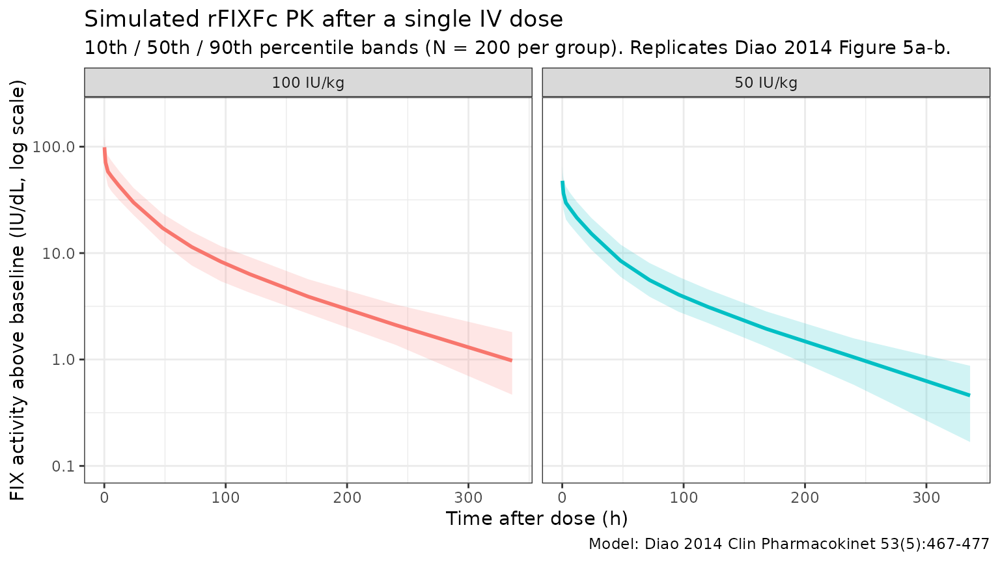

Model and source
- Citation: Diao L, Li S, Ludden T, Gobburu J, Nestorov I, Jiang H. Population pharmacokinetic modelling of recombinant factor IX Fc fusion protein (rFIXFc) in patients with haemophilia B. Clin Pharmacokinet. 2014;53(5):467-477. doi:[10.1007/s40262-013-0129-7](https://doi.org/10.1007/s40262-013-0129-7)
- Description: Three-compartment population PK model for recombinant factor IX Fc fusion protein (rFIXFc, eftrenonacog alfa, Alprolix) in adolescents and adults with severe to moderate haemophilia B.
- Article: https://doi.org/10.1007/s40262-013-0129-7 (Open Access)
- Modality: Fc-fusion factor concentrate, IV infusion.
rFIXFc is an extended half-life FIX concentrate consisting of a single recombinant factor IX molecule covalently fused (with no intervening sequence) to the dimeric Fc domain of human IgG1. The Fc domain binds the neonatal Fc receptor (FcRn), recycling rFIXFc away from lysosomal degradation and prolonging its plasma circulation relative to standard recombinant factor IX. The packaged model is the published Diao 2014 final-model column of Table 3, fit to baseline- and residual-corrected FIX activity from a single-ascending- dose phase 1/2a study and the registrational B-LONG phase 3 study, all in previously treated patients with severe to moderate haemophilia B.
Population
The development cohort comprised 135 patients with haemophilia B (Diao 2014 Table 1; modelling dataset summary in Table 2):
- 12 patients from a single-ascending-dose phase 1/2a study (NCT00716716) at doses 12.5, 25, 50, or 100 IU/kg rFIXFc.
- 123 patients from the registrational B-LONG phase 3 study (NCT01027364): weekly Arm 1 (20-100 IU/kg), individualised-interval Arm 2 (starting at 100 IU/kg), on-demand Arm 3 (20-100 IU/kg), and perisurgical Arm 4 (40-100 IU/kg). PK doses were 50 or 100 IU/kg by ~10-min IV infusion.
- Age 12.1 - 76.8 years (median 31.3 years).
- Body weight 45.0 - 186.7 kg (median 73.3 kg).
- Race: 60.7% White, 22.2% Asian, 8.9% Black, 7.4% Other, 0.74% American Indian or Alaska Native.
- HIV-positive: 3.7%; HCV-positive: 38.5%.
- All severe to moderate haemophilia B with endogenous FIX activity <= 2 IU/dL; FIX genotype: 55.5% missense, 17.8% nonsense, 13.3% frameshift, 3.0% splice, 10.4% other.
- Sex: haemophilia B is X-linked recessive, so the cohort is essentially all male.
- Modelling dataset: 1,400 FIX activity records from 135 baseline PK profiles plus 21 repeat profiles at week 26 (Arm 1 sequential PK subgroup); a separate 1,027-record trough/peak dataset was reserved for external validation.
The same metadata is available programmatically via
readModelDb("Diao_2014_rFIXFc")$population.
Source trace
The per-parameter origin is recorded as an in-file comment next to
each ini() entry in
inst/modeldb/specificDrugs/Diao_2014_rFIXFc.R. The table
below collects them in one place for review.
| Parameter (model name) | Value | Source |
|---|---|---|
lcl (typical CL, dL/h) |
log(2.39) | Diao 2014 Table 3: CL = 2.39 dL/h |
lvc (typical V1, dL) |
log(71.4) | Diao 2014 Table 3: V1 = 71.4 dL |
lq (typical Q2, dL/h) |
log(1.67) | Diao 2014 Table 3: Q2 = 1.67 dL/h |
lvp (typical V2, dL) |
log(87.0) | Diao 2014 Table 3: V2 = 87.0 dL |
lq2 (typical Q3, dL/h) |
log(39.3) | Diao 2014 Table 3: Q3 = 39.3 dL/h |
lvp2 (typical V3, dL) |
log(39.9) | Diao 2014 Table 3: V3 = 39.9 dL |
e_wt_cl (BW power on CL) |
0.436 | Diao 2014 Table 3: BW exponent on CL = 0.436 |
e_wt_vc (BW power on V1) |
0.396 | Diao 2014 Table 3: BW exponent on V1 = 0.396 |
| Reference body weight | 73 kg | Diao 2014 Table 3 typical-patient definition |
IIV block etalcl + etalvc
|
c(0.031329, 0.029042, 0.047089) | Diao 2014 Table 3: IIV CL = 17.7%, IIV V1 = 21.7%, corr(CL,V1) = 75.6% |
etalq (IIV on Q2) |
0.128164 | Diao 2014 Table 3: IIV Q2 = 35.8% |
etalvp (IIV on V2) |
0.213444 | Diao 2014 Table 3: IIV V2 = 46.2% |
etalvp2 (IIV on V3) |
0.142129 | Diao 2014 Table 3: IIV V3 = 37.7% |
propSd (proportional residual) |
0.106 | Diao 2014 Table 3: proportional residual error = 10.6% |
addSd (additive residual, IU/dL) |
0.24 | Diao 2014 Table 3: additive residual error = 0.24 IU/dL |
Equation: d/dt(central)
|
n/a | Diao 2014 Fig. 2 (three-compartment IV model schematic) |
Equation: d/dt(peripheral1)
|
n/a | Diao 2014 Fig. 2 |
Equation: d/dt(peripheral2)
|
n/a | Diao 2014 Fig. 2 |
| Baseline-correction equations | n/a | Diao 2014 Eqs. 1-2 (residual decay correction and DV definition) |
The footnote of Diao 2014 Table 3 states “IIV calculated as
sqrt(variance) * 100”, i.e., the reported percentage equals
sqrt(omega^2) * 100, so omega^2 = (CV/100)^2.
The IIV variances above were computed by squaring 0.177, 0.217, 0.358,
0.462, and 0.377. The CL:V1 covariance was computed as
0.756 * 0.177 * 0.217 = 0.029042.
Inter-occasion variability on CL (15.1% CV) and V1 (17.4% CV) was estimated in the paper from 21 repeat PK profiles at week 26. IOV is not implemented in this static model file; see Assumptions and deviations. IIV on Q3 was evaluated but dropped from the final model (high standard error 87%; Diao 2014 Sec. 3.1).
Virtual cohort
Original observed FIX activity data are not publicly available. The simulations below use a virtual cohort whose demographics approximate the Diao 2014 development population. A single IV dose of either 50 IU/kg or 100 IU/kg rFIXFc is administered at time 0 and FIX activity above baseline is observed over a 14-day window (the longest follow-up sampling time in the phase 1/2a study).
set.seed(2014)
n_per_group <- 200L
make_cohort <- function(n, dose_iu_per_kg, label, id_offset = 0L) {
tibble(
ID = id_offset + seq_len(n),
WT = pmin(pmax(rlnorm(n, log(73), 0.27), 45), 187),
treatment = label,
dose_iukg = dose_iu_per_kg
)
}
cohort <- bind_rows(
make_cohort(n_per_group, 50, "50 IU/kg", id_offset = 0L),
make_cohort(n_per_group, 100, "100 IU/kg", id_offset = n_per_group)
)
stopifnot(!anyDuplicated(cohort$ID))
summary(cohort)
#> ID WT treatment dose_iukg
#> Min. : 1.0 Min. : 45.00 Length :400 Min. : 50
#> 1st Qu.:100.8 1st Qu.: 62.70 N.unique : 2 1st Qu.: 50
#> Median :200.5 Median : 75.84 N.blank : 0 Median : 75
#> Mean :200.5 Mean : 78.04 Min.nchar: 8 Mean : 75
#> 3rd Qu.:300.2 3rd Qu.: 90.31 Max.nchar: 9 3rd Qu.:100
#> Max. :400.0 Max. :148.82 Max. :100
obs_grid <- c(0, 1 / 6, 0.25, 0.5, 1, 3, 6, 12, 24,
48, 72, 96, 120, 168, 240, 336)
build_events <- function(pop) {
dose <- pop |>
mutate(AMT = WT * dose_iukg) |>
tidyr::crossing(TIME = 0) |>
mutate(EVID = 1, CMT = "central", DV = NA_real_)
obs <- pop |>
tidyr::crossing(TIME = obs_grid) |>
mutate(AMT = NA_real_, EVID = 0, CMT = "central", DV = NA_real_)
bind_rows(dose, obs) |>
arrange(ID, TIME, desc(EVID)) |>
as.data.frame()
}
events <- build_events(cohort)Simulation
Run a stochastic VPC-style simulation (between-subject variability on CL, V1, Q2, V2, V3 included with the correlated CL:V1 block) and a typical-value simulation with the etas zeroed for direct parameter back-checks.
mod <- readModelDb("Diao_2014_rFIXFc")
sim <- rxode2::rxSolve(mod, events = events,
keep = c("treatment", "WT", "dose_iukg"),
returnType = "data.frame")
#> ℹ parameter labels from comments will be replaced by 'label()'
sim <- sim[sim$time >= 0, ]
mod_typ <- rxode2::zeroRe(mod)
#> ℹ parameter labels from comments will be replaced by 'label()'
sim_typ <- rxode2::rxSolve(mod_typ, events = events,
keep = c("treatment", "WT", "dose_iukg"),
returnType = "data.frame")
#> ℹ omega/sigma items treated as zero: 'etalcl', 'etalvc', 'etalq', 'etalvp', 'etalvp2'
#> Warning: multi-subject simulation without without 'omega'
sim_typ <- sim_typ[sim_typ$time >= 0, ]Replicate Figure 5: VPC by dose group
Diao 2014 Figure 5 shows the visual predictive check of the final model stratified by IV PK dose (50 IU/kg in panel a, 100 IU/kg in panel b), plotting the 10th, 50th, and 90th percentile of observed FIX activity against the same percentiles from 1,000 simulated profiles, on a log y-axis from 0.1 to 100 IU/dL over 0 - ~270 h. The figure below reproduces the percentile bands from the packaged model.
sim_summary <- sim |>
filter(time > 0) |>
group_by(time, treatment) |>
summarise(
p10 = stats::quantile(Cc, 0.10, na.rm = TRUE),
p50 = stats::quantile(Cc, 0.50, na.rm = TRUE),
p90 = stats::quantile(Cc, 0.90, na.rm = TRUE),
.groups = "drop"
)
ggplot(sim_summary, aes(time, p50, colour = treatment, fill = treatment)) +
geom_ribbon(aes(ymin = p10, ymax = p90), alpha = 0.18, colour = NA) +
geom_line(linewidth = 1) +
facet_wrap(~treatment) +
scale_y_log10(limits = c(0.1, 200)) +
labs(
x = "Time after dose (h)",
y = "FIX activity above baseline (IU/dL, log scale)",
colour = "Dose",
fill = "Dose",
title = "Simulated rFIXFc PK after a single IV dose",
subtitle = paste0("10th / 50th / 90th percentile bands (N = ", n_per_group,
" per group). Replicates Diao 2014 Figure 5a-b."),
caption = "Model: Diao 2014 Clin Pharmacokinet 53(5):467-477"
) +
theme_bw() +
theme(legend.position = "none")
Typical CL and Vss back-check
Diao 2014 reports that for a typical 73 kg patient (the reference subject of the final model), CL = 2.39 dL/h, V1 = 71.4 dL, and steady-state volume of distribution Vss = V1 + V2 + V3 = 71.4 + 87.0 + 39.9 = 198.3 dL. Reproducing those numbers from the typical-value simulation is the simplest possible self-consistency check.
ev_ref <- rxode2::et(amt = 50 * 73, time = 0, cmt = "central") |>
rxode2::et(0)
sim_ref <- rxode2::rxSolve(
mod_typ, events = ev_ref,
params = data.frame(WT = 73),
returnType = "data.frame"
)
#> ℹ omega/sigma items treated as zero: 'etalcl', 'etalvc', 'etalq', 'etalvp', 'etalvp2'
ref_pars <- sim_ref[1, c("cl", "vc", "q", "vp", "q2", "vp2"), drop = FALSE]
ref_pars$Vss <- ref_pars$vc + ref_pars$vp + ref_pars$vp2
knitr::kable(
ref_pars,
caption = "Typical-value PK parameters for the reference 73 kg patient",
digits = c(3, 2, 3, 2, 3, 2, 2)
)| cl | vc | q | vp | q2 | vp2 | Vss |
|---|---|---|---|---|---|---|
| 2.39 | 71.4 | 1.67 | 87 | 39.3 | 39.9 | 198.3 |
The model returns CL = 2.39 dL/h, V1 = 71.4 dL, Q2 = 1.67 dL/h, V2 = 87 dL, Q3 = 39.3 dL/h, V3 = 39.9 dL, and Vss = V1 + V2 + V3 = 198.3 dL — matching the values reported in Diao 2014 Table 3 (CL = 2.39 dL/h, V1 = 71.4 dL, Q2 = 1.67 dL/h, V2 = 87.0 dL, Q3 = 39.3 dL/h, V3 = 39.9 dL, Vss = 198 dL).
PKNCA validation
Use PKNCA to compute Cmax, AUC0-inf, and terminal half-life by dose group, and compare the simulated terminal half-life against the value reported in Diao 2014. The paper reports a geometric-mean terminal half-life of 81.1 h from the population PK post-hoc estimates (Diao 2014 Discussion, p. 476).
sim_nca <- sim |>
filter(!is.na(Cc), Cc > 0) |>
select(id, time, Cc, treatment)
dose_df <- events |>
filter(EVID == 1) |>
transmute(id = ID, time = TIME, amt = AMT, treatment)
conc_obj <- PKNCA::PKNCAconc(sim_nca, Cc ~ time | treatment + id,
concu = "IU/dL",
timeu = "h")
dose_obj <- PKNCA::PKNCAdose(dose_df, amt ~ time | treatment + id,
doseu = "IU")
intervals <- data.frame(
start = 0,
end = Inf,
cmax = TRUE,
tmax = TRUE,
aucinf.obs = TRUE,
half.life = TRUE,
clast.obs = TRUE,
lambda.z = TRUE
)
nca_res <- PKNCA::pk.nca(PKNCA::PKNCAdata(conc_obj, dose_obj,
intervals = intervals))
#> ■■■■ 11% | ETA: 10s
#> ■■■■■■■■■■■■■■■ 46% | ETA: 5s
#> ■■■■■■■■■■■■■■■■■■■■■■■■■ 80% | ETA: 2s
nca_tbl <- as.data.frame(nca_res$result)
summary_by_param <- function(param) {
nca_tbl |>
filter(PPTESTCD == param) |>
group_by(treatment) |>
summarise(
n = sum(!is.na(PPORRES)),
median = stats::median(PPORRES, na.rm = TRUE),
q05 = stats::quantile(PPORRES, 0.05, na.rm = TRUE),
q95 = stats::quantile(PPORRES, 0.95, na.rm = TRUE),
.groups = "drop"
)
}
half_life_summary <- summary_by_param("half.life")
cmax_summary <- summary_by_param("cmax")
auc_summary <- summary_by_param("aucinf.obs")
knitr::kable(
half_life_summary,
caption = "Simulated rFIXFc terminal half-life (h) by dose group, single IV dose.",
digits = c(0, 0, 1, 1, 1)
)| treatment | n | median | q05 | q95 |
|---|---|---|---|---|
| 100 IU/kg | 200 | 79.3 | 49.6 | 140.7 |
| 50 IU/kg | 200 | 76.3 | 49.0 | 152.0 |
knitr::kable(
cmax_summary,
caption = "Simulated rFIXFc Cmax (IU/dL) by dose group, single IV dose.",
digits = c(0, 0, 1, 1, 1)
)| treatment | n | median | q05 | q95 |
|---|---|---|---|---|
| 100 IU/kg | 200 | 104.2 | 69.2 | 155.2 |
| 50 IU/kg | 200 | 52.3 | 32.4 | 81.1 |
knitr::kable(
auc_summary,
caption = "Simulated rFIXFc AUC0-inf (IU*h/dL) by dose group, single IV dose.",
digits = c(0, 0, 1, 1, 1)
)| treatment | n | median | q05 | q95 |
|---|---|---|---|---|
| 100 IU/kg | 200 | 3153.1 | 2135.8 | 4598.1 |
| 50 IU/kg | 200 | 1578.2 | 1029.1 | 2241.1 |
Comparison against published values
Diao 2014 reports a geometric-mean terminal half-life of 81.1 h from the population PK post-hoc estimates (Discussion, p. 476). The simulated median half-life should be close to this value; differences > 20% would indicate a coding problem.
geo_mean <- function(x) exp(mean(log(x), na.rm = TRUE))
half_life_50 <- nca_tbl |>
filter(PPTESTCD == "half.life", treatment == "50 IU/kg")
half_life_100 <- nca_tbl |>
filter(PPTESTCD == "half.life", treatment == "100 IU/kg")
comparison <- tibble::tribble(
~quantity, ~simulated, ~published,
"Geo mean half-life, 50 IU/kg (h)", geo_mean(half_life_50$PPORRES), 81.1,
"Geo mean half-life, 100 IU/kg (h)", geo_mean(half_life_100$PPORRES), 81.1
) |>
mutate(
pct_diff = round(100 * (simulated - published) / published, 1)
)
knitr::kable(
comparison,
caption = "Simulated vs. Diao 2014 Discussion (p. 476) terminal half-life.",
digits = c(0, 1, 1, 1)
)| quantity | simulated | published | pct_diff |
|---|---|---|---|
| Geo mean half-life, 50 IU/kg (h) | 80.8 | 81.1 | -0.3 |
| Geo mean half-life, 100 IU/kg (h) | 81.6 | 81.1 | 0.7 |
Errata
No published erratum was located for Diao 2014 (Clin Pharmacokinet 2014; 53(5):467-477; Open Access via Springer). The packaged parameter values are taken from Diao 2014 Table 3 (final-model column), which is internally consistent: typical CL = 2.39 dL/h, V1 = 71.4 dL, and Vss = V1 + V2 + V3 = 198.3 dL match the values quoted in the Abstract and Discussion.
Assumptions and deviations
-
Inter-occasion variability omitted. Diao 2014
estimated IOV on CL (15.1% CV) and V1 (17.4% CV) from 21 repeat PK
profiles at week 26 in the Arm 1 sequential PK subgroup. The static
library model has no occasion variable, so IOV is not implemented as a
separate eta. For Bayesian forecasting use cases that explicitly model
occasions, the IOV variances
(
omega^2_IOV_CL = 0.151^2 = 0.022801andomega^2_IOV_V1 = 0.174^2 = 0.030276) can be added on top of the packaged IIV. -
Inter-individual variability convention. Diao 2014
footnotes Table 3 with “IIV calculated as sqrt(variance) * 100”, i.e.,
the reported CV% values are
sqrt(omega^2) * 100, not the log-normalsqrt(exp(omega^2) - 1). The packaged variances were computed with the simpleromega^2 = (CV/100)^2formula to match the paper’s convention. -
No IIV on Q3. Diao 2014 evaluated IIV on Q3 but
dropped it from the final model because of a high standard error (87%;
Diao 2014 Sec. 3.1). The packaged model carries no
etalq2. -
FIX activity is baseline-corrected. The one-stage
aPTT clotting assay used in the trials does not distinguish endogenous
baseline FIX activity from the input rFIXFc or residual activity of a
pre-study FIX product, so Diao 2014 corrects each observation (their
Eqs. 1-2) before fitting: individualised baseline (lowest activity per
subject, set to 0 if <1 IU/dL or to the observed lowest if 1-2 IU/dL)
and exponentially-decayed residual from any prior BeneFIX dose are
subtracted. The packaged model output
Cctherefore represents the rFIXFc-attributable FIX activity above baseline, in IU/dL. - Body weight exponents are estimated, not fixed at the allometric values. Diao 2014 reports estimated BW exponents of 0.436 on CL and 0.396 on V1, markedly lower than the canonical 0.75 / 1 (Discussion, p. 475). The packaged model uses these estimated exponents, not the theoretical values. Inclusion of BW reduced IIV on CL by only 3.4 percentage points and IIV on V1 by only 2.5 percentage points, indicating that BW explains only a small fraction of the between-patient variability.
- No covariate effect on Q2, V2, Q3, or V3. BW was tested on all six structural parameters but retained only on CL and V1 after forward addition / backward elimination (P < 0.005 / P < 0.001 thresholds; Diao 2014 Sec. 3.3). Race, albumin, and study were also screened and dropped.
- Virtual cohort. Body weight was sampled from a log-normal distribution with median 73 kg and SD 0.27 on the log scale, truncated to the observed range of the development cohort (45 - 187 kg; Diao 2014 Table 1). Joint covariate structure (age x weight, race x weight) is not simulated. The validation here is by dose group (50 vs 100 IU/kg), matching the stratification in Diao 2014 Figure 5.
-
Hemophilia B is X-linked recessive, so the
development cohort and the virtual cohort here are all male
(
sex_female_pct = 0in the population metadata). The model has no sex covariate. -
Lower age bound. Diao 2014 enrolled patients aged
12.1 years and older. The packaged model has no maturation term, so
applying it to children younger than ~12 years extrapolates the
body-weight scaling without empirical support. The Koopman 2023 model
(
modellib("Koopman_2023_factorix")) was developed specifically to extend rFIX-Fc PK predictions down to age 2 years.